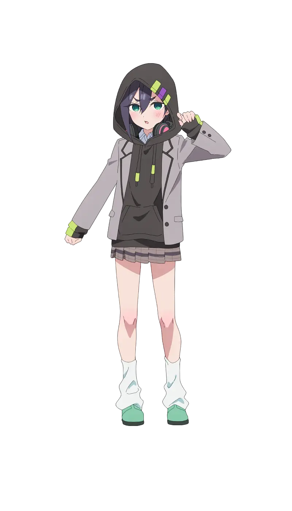
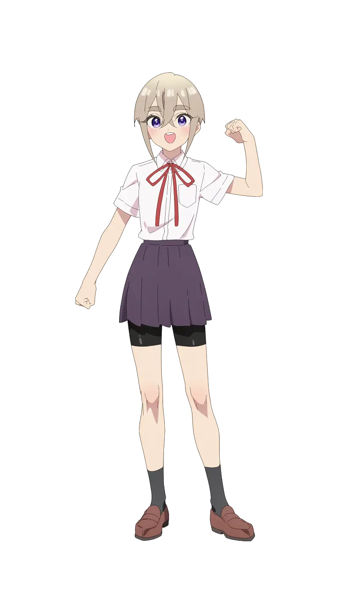
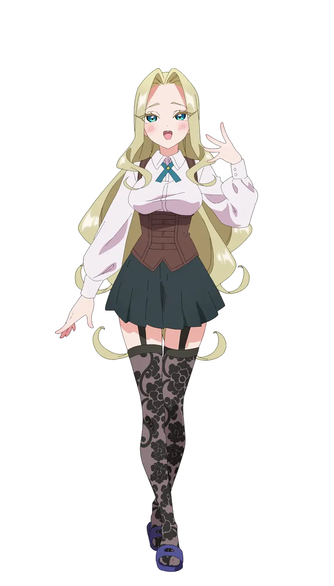
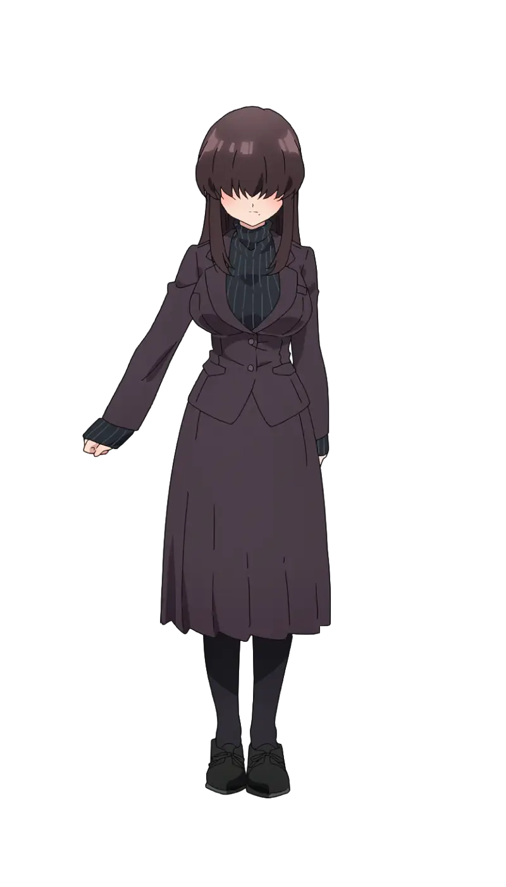

- Scroll down -
Haraga Kurumi
Kurumi is a charismatic and somewhat mischievous girl who possesses a bubbly personality.

Sutou Iku
Iku is a serious and reliable girl who has a strong sense of duty and responsibility.

Utsukushisugi Mimimi
Mimimi is a stunningly beautiful girl, often described as a "goddess" due to her perfect looks.

Simplified
Meme prefers to keep a low profile and is often seen as enigmatic or withdrawn.

The 100 Girlfriends
The 100 Girlfriends Who Really, Really, Really, Really, Really Love You is a romantic-comedy series written by Nakamura Rikito and drawn by Nozawa Yukiko.
- Other content -